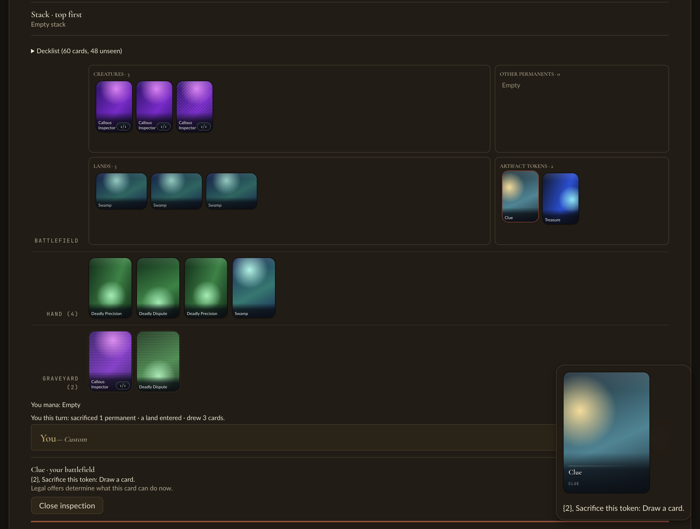

2026-11-12. The people this change serves: card authors writing tokens in Rust, Python consumers of the
managym wheel, and Academy players who see tokens on the table.
I built wheels from the base commit d2cde1117 and from the branch, then installed each in a fresh
/tmp venv. In each venv I played 30 random-policy games with 2-colour decks of every eligible single-colour
token maker (seeds 0–29).
games 30 … all terminated (14–45 turns) token objects seen: Ally, Clue, Food, Soldier, Monk, Bear, Ballistic Boulder, Human Soldier, Treasure, plus token copies of cards (Phoenix Fleet Airship, Joo Dee, …) diff out-base.txt out-new.txt → IDENTICAL
The public surface compared the same way:
content_pool("world") rows hash the same on both. The 11 token rows carry their
token.* key and Scryfall id, and are "unsupported: A token, created by its card".learning_catalog(): every array is identical except content_digest.world_identity().card_digest moves from 0798b2c7… to aa606cea…, as already reported.card_definitions_json() now shows "CreateToken": {"token_name": "token.clue"} where it
showed "Clue". The field name was kept so the learning-token field hash stays the same; see questions.md.check_decks, admit_decklists, Env.reset) gives the same answers on
both. "Spirit" and "Treasure" are rejected as tokens; "token.spirit" is rejected as unknown.In a throwaway worktree I added token.spirit_flying: a white 1/1 flying "Spirit" with
scryfall_id: None. I listed it in tokens() and pointed Realm of Koh at it. Foggy Swamp Spirit
Keeper still makes token.spirit.
cargo nextest --profile ci): 579/579 pass.token.spirit 1/1 with no keywords and token.spirit_flying 1/1 with flying.check_scryfall.py checked 351 definitions and skipped the unprinted token. It reported
8 problems, all double-faced-card names (for example "Avatar Aang // …"). The base revision reports the same 8."token.spirit_flyng") fails three debug tests with a clear error:
ContentError("\"token.spirit_flyng\" is not in the pack").Found and fixed: with two tokens sharing a printed name, a deck listing "Spirit" was rejected as
ambiguous: card name identifies multiple definitions instead of with the token reason. Both resolvers
(deck_admission::admit_in_world and decklist::admit_with_world) now share
named_definition. Rows that share a name and are all unsupported for one reason resolve to that reason.
Names that match more than one eligible definition stay ambiguous. New test:
tokens_sharing_a_printed_name_are_unsupported_not_ambiguous. After the fix the author build reports
Spirit: A token, created by its card; not a deck entry.
I ran ./scripts/play --demo precision --port 8731 --frontend-port 5931 and pressed New Game. The checked
prefix replays against the re-recorded fixture digests without divergence. Sacrificing Callous Inspector leaves a
Clue, and a Treasure comes from Deadly Dispute. Both appear under "Artifact tokens · 2". Inspecting the Clue shows
"{2}, Sacrifice this token: Draw a card." No console errors. I stopped the server with SIGINT.

cargo fmt --check and cargo clippy --workspace --all-targets: clean.cargo nextest run --workspace --profile ci (debug): 1057 passed.card_definitions_json uses the field name token_name but now holds a key. This is kept on
purpose to preserve learning tokens.